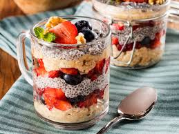

Overnight Oats
Uma opção prática, nutritiva e fácil de preparar para o café da manhã ou lanche.
Com aveia, leite, iogurte e frutas, essa receita pode ser preparada na noite anterior e consumida no dia seguinte.
Ingredientes
- 30g de farelo de aveia
- 80ml de leite desnatado
- 15g de iogurte natural desnatado
- 30 g de morango
- 30 g de banana-prata
- Canela a gosto
Modo de preparo
- Em um pote com tampa, misture o farelo de aveia, o leite e o iogurte até obter uma mistura homogênea.
- Acrescente o morango e a banana picados.
- Finalize com canela a gosto.
- Tampe e leve à geladeira por pelo menos 6 horas, preferencialmente durante a noite.
- Sirva gelado.
Informações nutricionais
Por porção, considerando as quantidades indicadas:
- Valor energético: 146 kcal
- Carboidratos: 35 g
- Proteínas: 9 g
- Gorduras totais: 2 g
- Fibras alimentares: 7 g
Os valores nutricionais são estimativas e podem variar conforme as marcas e os ingredientes utilizados.
← Voltar